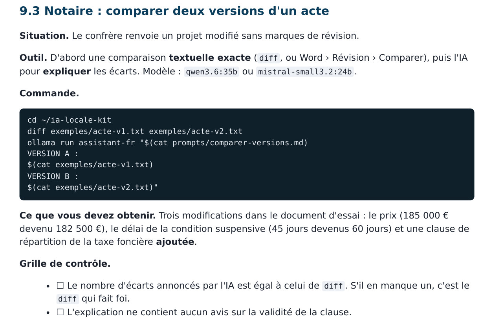
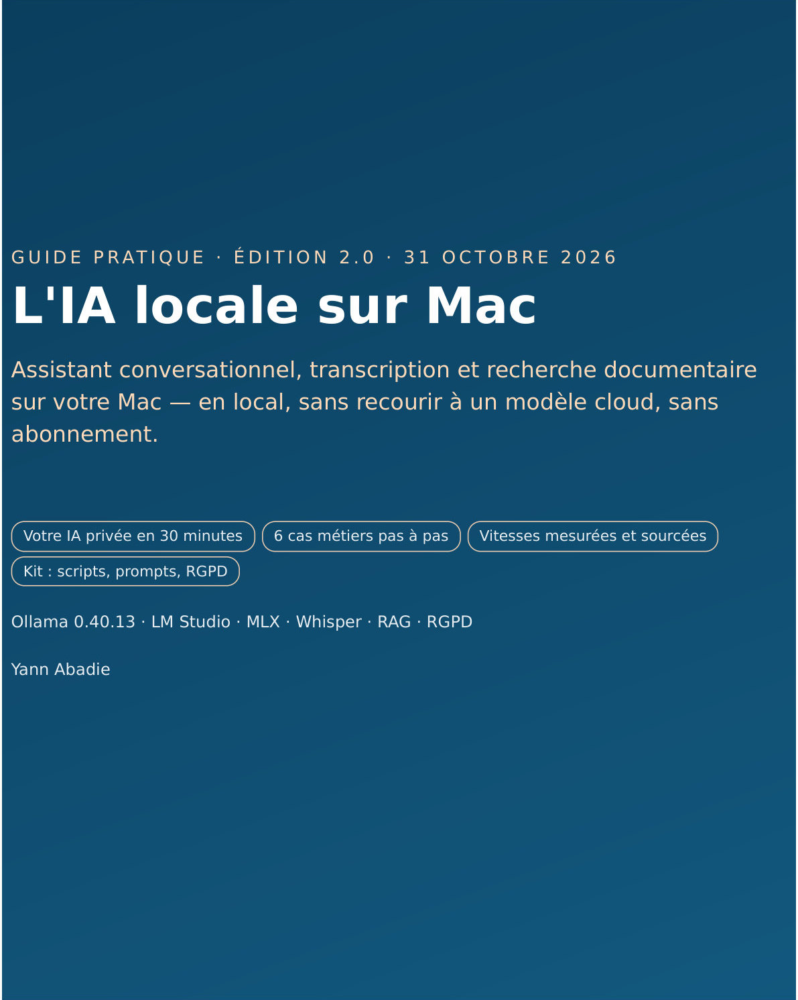

Rédigé par Yann Abadie. Vendu par l’auteur, Yann Abadie, joignable à yann.abadie@gmail.com. Ce guide s’adresse aux professionnels qui veulent utiliser l’IA sans confier leurs dossiers à un service en ligne.
L’objectif de votre premier essai guidé
Un assistant en français qui tourne sur votre Mac. Le parcours tient en 6 étapes, chacune avec un point de contrôle : si vous ne voyez pas ce qui est décrit, allez au point correspondant du chapitre 10 bis. Les six étapes figurent en entier dans l’extrait gratuit ; les cinq premières se font sans le kit, la sixième utilise un fichier du kit.
Ce que le test en mode avion montre, et ce qu’il ne montre pas
À l’étape 5, le guide fait couper le Wi-Fi et, si un câble réseau est branché, le débrancher ; le chapitre 10 bis reprend ce test. Ce test, appelé « mode avion » dans le guide et réalisé une fois ces connexions coupées, montre qu’un traitement local est possible à cet instant. Couper uniquement le Wi-Fi ne suffit pas si une autre connexion reste active.
Il ne démontre pas l’absence de transferts avant ou après, et il ne garantit pas, à lui seul, l’absence de tout transfert si d’autres fonctions en ligne des outils sont activées.
Le chapitre 10 bis propose trois niveaux de contrôle : ce test, la liste des connexions ouvertes pendant une génération, puis un pare-feu sortant dont la règle peut être conservée dans votre registre RGPD. Le guide et son extrait décrivent un parcours vérifiable ; leurs formulations ne valent pas garantie (CGV, article 2).
À qui s’adresse ce guide, et à qui il ne s’adresse pas
- vous avez un Mac à puce Apple (M1 à M6), idéalement avec 16 Go de mémoire ou plus ;
- vous avez de l’espace disque libre : le premier essai demande le téléchargement d’un modèle d’environ 8 Go sur un Mac de 16 Go ; chaque modèle pèse de 2 à 80 Go, et le guide recommande au moins 100 Go libres pour expérimenter ;
- votre Mac fonctionne sous macOS Sonoma 14 ou une version ultérieure : c’est l’exigence d’Ollama, sur lequel repose le parcours principal (documentation d’Ollama, au 10 novembre 2026) ;
- vous manipulez des documents couverts par le secret professionnel ou le RGPD ;
- vous voulez des procédures précises, pas une introduction générale à l’IA.
- vous êtes sur PC Windows ou Linux : le guide est spécifique au Mac ;
- vous avez un Mac à processeur Intel : le parcours décrit vise les puces Apple (M1 à M6) ;
- vous attendez le niveau des meilleurs modèles en ligne sur un Mac de 8 Go : le guide classe cette configuration en « usage limité » ;
- vous cherchez un cours de développement ou d’entraînement de modèles.
Six cas métiers, testables avant d’y mettre un vrai dossier
Chaque cas fournit un document d’essai fictif, l’invite ou le script du kit à utiliser, le résultat attendu et une grille de contrôle pour juger la réponse du modèle. Les six fiches donnent la commande à copier. Les fiches font appel à l’assistant créé à l’étape 6 (construit par défaut à partir de gemma4:12b, le modèle indiqué pour 16 Go) ou à un script du kit. Pour certains cas, le guide recommande aussi un modèle plus lourd, qui demande davantage de mémoire : la fiche du notaire, reproduite ci-dessous, cite ainsi qwen3.6:35b, que le démarrage express associe aux Mac de 32 Go et plus.
| Métier | Tâche | Résultat attendu, vérifiable |
|---|---|---|
| Avocat | Chronologie à partir de pièces | Tableau de 7 lignes datées, chacune rattachée à sa pièce ; la date approximative est signalée |
| Expert-comptable | Facture → ligne CSV | Champs extraits, puis contrôle HT + TVA = TTC par un script (et non par l’IA) |
| Notaire | Comparer deux versions d’un acte | Les 3 modifications de fond, croisées avec une comparaison textuelle exacte (commande diff) |
| Kinésithérapeute ou médecin | Dictée → compte rendu structuré (format SOAP) | Les quatre rubriques remplies ; échelle de douleur (6/10 puis 3/10) et nombre de séances restantes (4) repris à l’identique |
| PME du BTP | Réunion de chantier → compte rendu | 3 décisions, 4 actions avec responsables et échéances, 1 point en suspens |
| Tous | Répondre à un client mécontent | Réponse de 8 à 12 lignes, qui reconnaît le désagrément sans reconnaître de faute ; aucun engagement que vous n’avez pas décidé |
Les résultats décrits dans le tableau portent sur ces documents d’essai : ce sont des critères de contrôle, pas une garantie générale sur les réponses de l’IA. Sur un dossier réel, les résultats doivent être relus et vérifiés avant toute utilisation professionnelle.
L’extrait gratuit s’arrête au premier essai ; le chapitre de dépannage auquel renvoient ses points de contrôle n’y figure pas. Pour 29 €, le guide complet y ajoute les six cas métiers pas à pas, avec leurs documents fictifs et leurs grilles de contrôle, puis la transcription, la recherche documentaire et le dépannage. Le kit fournit les fichiers nécessaires pour suivre ces parcours.

Image extraite du PDF vendu (chapitre 9). Chaque cas du guide suit la même fiche, avec un document d’essai et une grille de contrôle.
Obtenir le guide + le kit — 29 €
Téléchargement immédiat après le paiement · satisfait ou remboursé 30 jours
Des mesures publiques et un test pour votre Mac
Jugez sur pièces : l’extrait gratuit contient en entier les six étapes du premier essai, et la source publique des mesures est citée ci-dessous. Après l’achat, le script bench.sh du kit mesure votre propre Mac ; la garantie de 30 jours vous en laisse le temps.
Le chapitre 2 bis reprend, dans un tableau, une sélection de mesures publiques (de M1 à M5 Ultra), avec la source citée. Une mesure M6 figure dans la même source, sans être reprise dans le tableau ; le chapitre 2 reprend par ailleurs des vitesses publiées pour un Mac mini M6 de 32 Go, avec leur source, et ses exemples de Mac ont été recoupés avec les fiches Apple. Exemple, sur un modèle de test compact (LLaMA 7B, quantification Q4_0, c’est-à-dire une version compressée) : environ 24 jetons par seconde sur un Mac M4 de base (10 cœurs GPU), environ 51 sur un M4 Pro (20 cœurs GPU), un jeton étant un mot court ou un fragment de mot. Ce sont des débits de génération, mesurés pour une configuration précise : ils servent à comparer les puces. Ils n’annoncent pas le délai complet d’une réponse et ne représentent pas tous les modèles présentés dans le guide. Ce modèle de test sert de référence de débit ; ce n’est pas l’un des modèles que le guide recommande d’installer. Source : discussion llama.cpp n° 4167.
Sommaire détaillé
- « Démarrage express » : premier essai guidé en environ 30 minutes, en 6 étapes avec points de contrôle ; variante LM Studio sans Terminal
- 1. Pourquoi l’IA locale : ce qu’elle fait bien et ses vraies limites
- 2. Choisir son Mac et sa mémoire, puis 2 bis. Les chiffres : règle de mémoire, vitesses mesurées (sélection sourcée, de M1 à M5 Ultra dans le tableau llama.cpp), script de mesure
- 3. Installer : Ollama, LM Studio, llama.cpp, MLX
- 4. Choisir ses modèles : Gemma 4, Qwen 3.6, Mistral Small 3.2, gpt-oss, Ministral 3, modèles de vision, de code et d’embeddings, avec les noms exacts vérifiés le 31/10/2026
- 5. Transcrire ses réunions en local : Whisper, puis compte rendu automatique
- 6. Interroger ses documents : recherche dans vos documents (RAG local), script fourni
- 7. Automatiser : Raccourcis macOS, scripts, API locale
- 8. RGPD et secret professionnel : checklist, fiche de registre, charte d’usage
- 9. Six cas concrets pas à pas, un serveur pour l’équipe (9.7), puis mesurer le temps réellement gagné
- 10. Dépannage et performances, puis 10 bis. Arbre de dépannage et contrôle de la confidentialité : dépannage par symptôme, puis méthode en trois niveaux pour vérifier que le traitement reste local
- 11. Checklists ; annexes : glossaire, contenu du kit, sources, programme de prise en main sur 5 jours ; édition, mises à jour et contact

Couverture du PDF vendu. La mention « en local, sans recourir à un modèle cloud, sans abonnement », comme celles de l’extrait gratuit et du guide complet, décrit l’objectif du parcours local ; elle ne garantit pas l’absence de transferts, qui dépend de la configuration des outils, des autres services du Mac et des contrôles réalisés.
→ Lire l’extrait gratuit (couverture, sommaire, démarrage express)
Guide, tutoriels gratuits ou IA en ligne : ce qui change
| Critère | Parcours local décrit dans le guide | Tutoriels gratuits | ChatGPT / Claude (cloud) |
|---|---|---|---|
| Traitement de vos documents en local | Parcours expliqué et vérifiable (ch. 10 bis) | Selon le tutoriel et l’outil | Non : traitement sur les serveurs du fournisseur |
| Spécifique au Mac et aux métiers français | Oui : Mac à puce Apple, cas et documents d’essai en français | Variable selon le tutoriel | Sans objet |
| Qualité sur les tâches complexes | Souvent inférieure à celle des meilleurs modèles cloud, selon la tâche et le modèle local retenu | Sans objet | Souvent supérieure sur les tâches complexes, selon le modèle et l’offre |
| Coût | Guide : 29 € une fois. Parcours local présenté sans abonnement, hors matériel et consommation électrique | Gratuits ; temps de recherche, de tri et d’adaptation variable selon les tutoriels | Souvent un abonnement, selon l’offre (certaines formules restent gratuites et limitées) |
Dans le kit
L’archive ZIP fournie avec le PDF contient 31 fichiers utiles, notamment :
- des scripts d’installation, de mesure et d’automatisation (
installer.sh,bench.sh, transcription, extraction de facture, etc.) ; - des invites (prompts) pour les cas métiers du guide ;
- des documents d’essai fictifs (pièces, facture, acte, dictée, réunion de chantier, courriel client) ;
- des fichiers de configuration (Modelfile) pour créer votre assistant local à partir d’un modèle téléchargé à part ;
- un script de recherche dans vos documents (RAG local) ;
- des modèles de documents à adapter, utiles à une conformité RGPD (checklist, fiche de registre, charte d’usage).
Contenu du kit, une fois le dossier « kit » de l’archive renommé et placé à l’emplacement que le guide note ~/ia-locale-kit :
~/ia-locale-kit/ LISEZMOI.md mesure-gain.csv exemples/ 7 documents d’essai fictifs modelfiles/ 3 fichiers de configuration (Modelfile) prompts/ 8 fichiers : invites métiers et banc d’essai rag/ 1 script de recherche dans vos documents rgpd/ 3 fichiers : checklist, fiche de registre, charte d’usage scripts/ 7 fichiers : installation, mesure, transcription, extraction de facture
Les modèles d’IA ne sont pas dans le kit : ils se téléchargent à part, en suivant le guide.
Garantie
Satisfait ou remboursé pendant 30 jours calendaires à compter du paiement, sur simple e-mail à yann.abadie@gmail.com, sans justification. La date d’envoi de votre demande fait foi. Le remboursement intégral est effectué par le moyen de paiement d’origine, au plus tard 14 jours après réception de la demande. Cette garantie s’ajoute à la garantie légale des vices cachés, sans s’y substituer. Après remboursement, vous cessez d’utiliser le guide et le kit et n’en conservez aucune copie (CGV, article 8).
Questions fréquentes
Mon Mac a 8 Go de mémoire, est-ce suffisant ?
C’est possible pour des usages limités (reformulation, courriels, résumés courts), avec le petit modèle que le guide indique pour 8 Go : gemma4:e2b-it-q4_K_M, environ 4,6 Go. Ce n’est pas une compatibilité générale. Pour l’analyse de longs documents, non : le guide classe les Mac de 8 Go en « usage limité » et chiffre ce que permettent 16 Go et 24 Go et plus.
Faut-il savoir programmer ?
Non. Il suffit de copier-coller des commandes dans le Terminal. Le premier essai peut même s’en passer, avec LM Studio ; les six cas métiers, eux, se lancent dans le Terminal, et trois d’entre eux utilisent un script du kit.
Est-ce conforme au RGPD ?
Un parcours local correctement configuré évite d’envoyer vos documents à un modèle cloud, mais ne dispense pas de vos autres obligations. Plusieurs outils cités proposent aussi des fonctions en ligne : le guide indique comment les éviter. Le chapitre 8 et le kit fournissent une checklist, une fiche de registre et une charte d’usage. Ce n’est pas un avis juridique.
Les modèles cités seront vite dépassés ? Les mises à jour sont-elles incluses ?
Les modèles évoluent vite : c’est le rythme du domaine. Les mises à jour ne sont pas incluses. L’édition 2.0 a été vérifiée le 31/10/2026 ; votre achat porte sur cette édition, telle qu’elle est fournie au moment du paiement, et le vendeur ne s’engage à publier aucune mise à jour. Une nouvelle édition n’est ni envoyée d’office ni comprise dans le prix. Le chapitre 4 explique comment lire le nom d’un modèle et comment en tester un en dix minutes.
Combien coûtent les logiciels ?
À la date de vérification de l’édition (31 octobre 2026), pour les usages locaux décrits dans le guide, les outils présentés (Ollama, LM Studio, llama.cpp, MLX et Whisper) peuvent être utilisés gratuitement, sans abonnement ni clé d’API.
Sous quel format ?
Un PDF de 42 pages (environ 455 Ko) et une archive ZIP (kit de 31 fichiers, environ 20 Ko). Après le paiement, vous êtes redirigé vers la page de confirmation et de téléchargement ; un reçu est envoyé par le prestataire de paiement.
Puis-je avoir une facture ?
Non : aucune facture n’est établie. Vous recevez un reçu de paiement, envoyé par le prestataire (Stripe ou, le cas échéant, PayPal) à l’adresse e-mail utilisée pour le paiement. En cas de remboursement par Stripe, un reçu de remboursement est également envoyé par Stripe. L’adresse de support indiquée sur les reçus Stripe est yann.abadie@gmail.com.
Les fichiers peuvent-ils être utilisés dans un cabinet ?
Oui, pour un usage interne à votre structure, selon les conditions générales de vente (version 1.3 du 12 novembre 2026). Les fichiers sources du guide et du kit ne peuvent pas être redistribués à des tiers. Les documents que vous produisez avec le guide ou le kit peuvent être remis à vos clients.
Que se passe-t-il après le paiement ?
Dès la confirmation du paiement, vous êtes redirigé vers la page de confirmation et de téléchargement, où vous récupérez le guide et le kit. Un reçu de paiement est envoyé par le prestataire utilisé (Stripe ou, le cas échéant, PayPal) à l’adresse e-mail utilisée pour le paiement. En cas de remboursement par Stripe, un reçu de remboursement est également envoyé par Stripe. L’adresse de support indiquée sur les reçus Stripe est yann.abadie@gmail.com. Le vendeur n’envoie pas d’e-mail de confirmation distinct de ces reçus.
La page de confirmation et de téléchargement rappelle votre accord pour la fourniture immédiate et, le cas échéant, la renonciation au droit de rétractation, indique la garantie de 30 jours, et comporte un lien vers les conditions générales de vente, version 1.3 du 12 novembre 2026 (copie datée ; le même texte figure sur la page des CGV en vigueur). Enregistrez ou imprimez ces conditions ainsi que cette page de confirmation, et conservez une copie des fichiers. Sur simple demande par e-mail, le vendeur vous renvoie les CGV applicables.
Si le reçu n’arrive pas, vérifiez d’abord vos courriers indésirables, puis écrivez à yann.abadie@gmail.com en indiquant l’adresse e-mail utilisée pour le paiement. Si la redirection n’a pas lieu, si vous perdez le lien ou si un fichier est défectueux, écrivez à la même adresse, avec la même indication : le vendeur renvoie un accès aux fichiers, pendant au moins 30 jours à compter du paiement, et au-delà dans la mesure du possible. Ce délai ne concerne que le renvoi d’un accès : il ne limite pas la durée d’utilisation des fichiers que vous avez conservés, dans les conditions de la licence. Réponse sous deux jours ouvrés.
Et sur PC ?
Non couvert. Ne l’achetez pas pour un PC.
Obtenir le guide + le kit — 29 €
Prix total : 29 €, sans frais supplémentaires ni abonnement. Paiement sur la page sécurisée de Stripe (notamment par carte bancaire) ou, lorsqu’il est proposé, de PayPal.
Satisfait ou remboursé pendant 30 jours calendaires à compter du paiement, sur simple e-mail, sans justification ; remboursement intégral au plus tard 14 jours après réception de la demande.
Avant de payer, vous confirmez séparément, par deux actions distinctes sur la page de paiement, l’acceptation des conditions générales de vente (version 1.3 du 12 novembre 2026) et votre demande de fourniture immédiate du guide et du kit, accompagnée, si un droit de rétractation est applicable, de la reconnaissance de sa perte lorsque cette fourniture commence. La garantie de 30 jours reste applicable.
Après le paiement, un reçu de paiement est envoyé par le prestataire (Stripe ou, le cas échéant, PayPal) et vous êtes redirigé vers la page de confirmation et de téléchargement. En cas de remboursement par Stripe, un reçu de remboursement est également envoyé. Le vendeur n’envoie pas d’e-mail de confirmation distinct de ces reçus.
Facture électronique 2026–2027 : un validateur gratuit, lui aussi 100 % local
Complément au cas métier sur l’extraction locale de factures : testez vos fichiers Factur-X (PDF/A-3) et XML EN 16931 directement dans votre navigateur, sans envoyer vos pièces à un serveur. Outil indépendant, qui ne remplace pas une plateforme agréée.